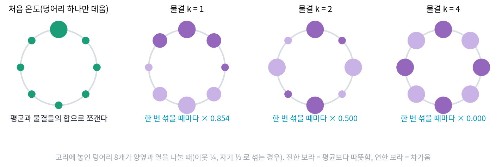
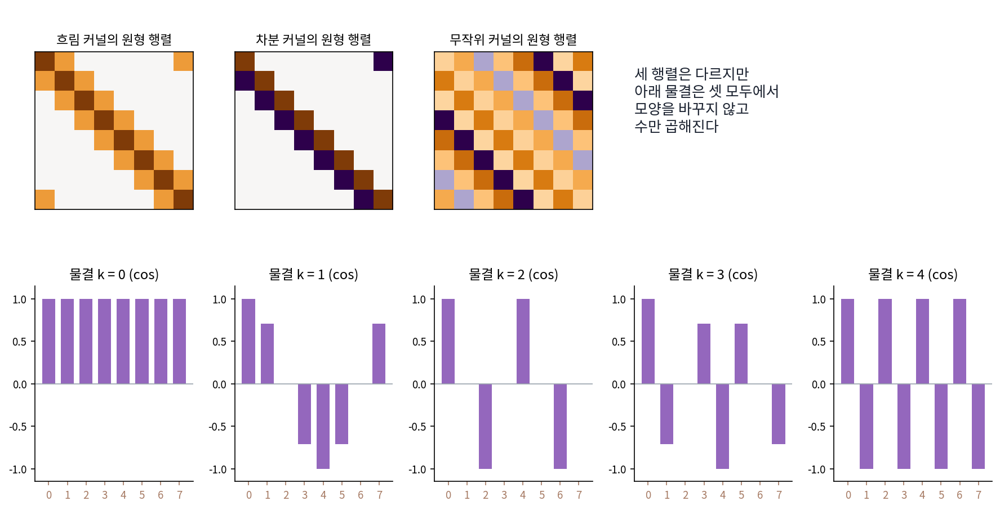
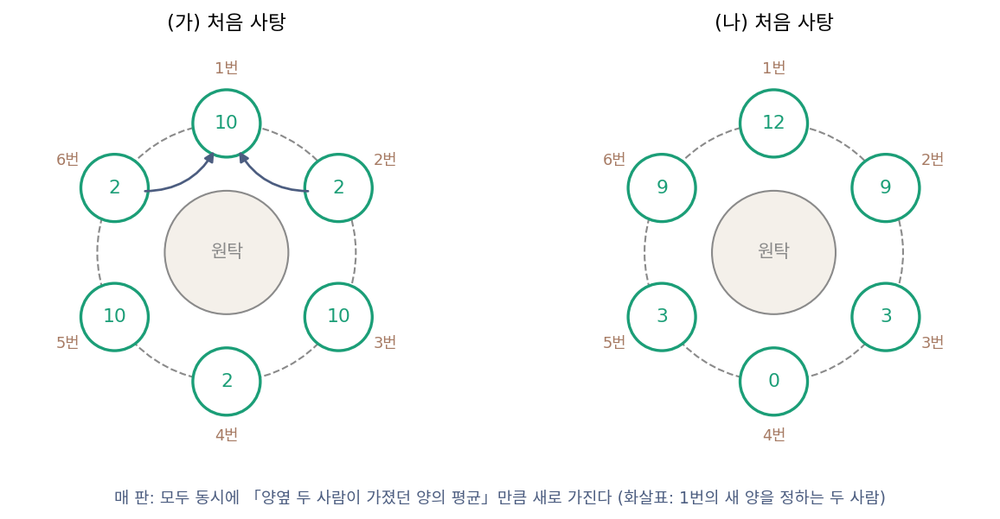
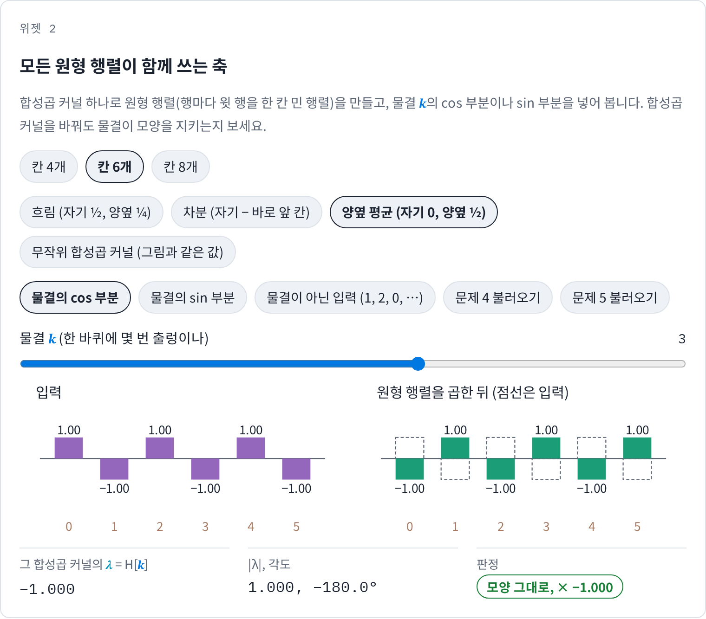
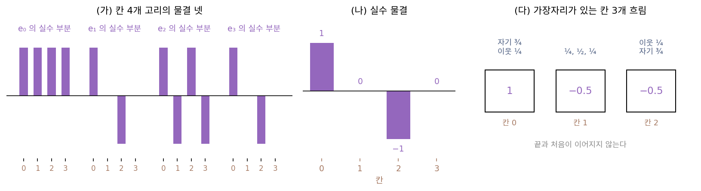
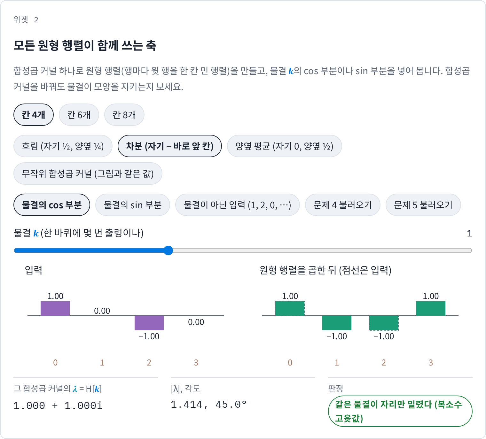
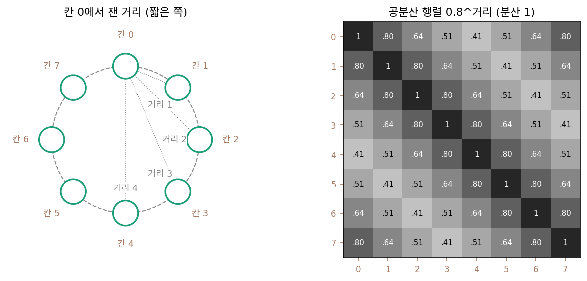

원형 행렬: 모든 필터가 같은 물결을 축으로 쓴다
선형 시불변 연산은 모두 원형 합성곱이고, 행렬로 적으면 행마다 윗 행을 한 칸 민 꼴이었다. 고유벡터를 떠올려 보자. 고유벡터는 변환을 거쳐도 방향이 바뀌지 않는 축이고, 그 축 위에서는 변환이 수 하나(고윳값)를 곱하는 일로 줄어든다. 행렬마다 고유벡터를 찾을 수 있다면, 신호를 그 축으로 다시 적어 변환을 수 곱하기 몇 번으로 끝낼 수 있다.
문제는 필터가 하나가 아니라는 것이다. 사진 앱의 흐림, 선명하게, 이퀄라이저의 저음 강조, 신경망 층의 수많은 합성곱 커널이 저마다 다른 행렬이다. 행렬마다 고유벡터를 새로 구해야 한다면 이 방법은 쓸모가 적으니, 서로 다른 필터들이 같은 축을 고유벡터로 함께 쓸 수는 없을까?
역사: 고리에 놓인 덩어리들
필터마다 따로 구하지 않아도 되는 공통의 축이라는 물음에 처음 닿은 사람은 열을 연구하던 푸리에(Joseph Fourier)였다. 1822년에 펴낸 『열의 해석적 이론』의 머리글에서 그는 자기의 첫 해석적 연구가 이어진 물체가 아니라 「떨어져 있는 덩어리들 사이의 열 나누기」였고, 이어진 물체의 이론은 몇 해 뒤에 풀려 1807년 말 프랑스 학사원에 원고로 냈다고 적었다. 그 첫 연구를 책 안에 남겨 두었는데, 그 가운데 하나가 둥근 고리(armille)를 다룬 장의 「고리 모양으로 늘어선 덩어리 n개」다. 크기와 재료가 같은 덩어리 n개가 원을 따라 놓이고, 이웃끼리만 열을 주고받으며, 처음 온도는 아무렇게나 주어진다.
푸리에가 적은 답은 덩어리마다의 온도를, 둘레를 2π/n씩 나눈 각도의 배수에 대한 사인·코사인 항들의 합으로 나타낸 것이었다. 항마다 시간이 흐르면 저마다의 비율로 줄어들고, 가장 느리게 줄어드는 항이 끝까지 남는다. 그는 처음에 한 덩어리만 데운 경우를 따로 풀고, 일반적인 경우는 덩어리마다 그렇게 푼 것을 더하면 된다고도 적었다. 칸 하나의 응답을 밀고 더하는 생각과 같다. 그리고 오랜 시간이 지나면 덩어리마다 평균 온도와의 차이가 같은 분수의 거듭제곱으로 줄어들며, 평균과의 차이를 덩어리마다 늘어놓은 모양이 고리를 한 바퀴 도는 사인 꼴이라는 것도 짚었다. 덩어리들이 어떻게 열을 나누든, 고리 위에서는 사인과 코사인이 저마다 따로 줄어드는 모양이었다.


덩어리 n개면 n × n 행렬 하나 만들고 고윳값 분해를 돌리면 끝이잖아요. numpy 로 한 줄이에요.

1807년의 푸리에에게는 그 한 줄이 없었어요. 「행렬」이라는 낱말부터 실베스터가 1850년에야 처음 썼거든요. 푸리에가 붙든 것은 덩어리마다 온도가 어떻게 변하는지 적은 식 n개였어요.

음, 식 n개가 서로 얽혀 있는데 n이 정해지지도 않았으면 숫자를 넣어 풀어 볼 수도 없겠네요. n = 3이나 4는 손으로 된다 쳐도, 덩어리가 몇 개든 통하는 답을 말해야 하니까요.

그래요. 그런데도 그가 적은 답은 덩어리 수 n을 그대로 넣은 식 하나였어요. 둘레를 2π/n씩 나눈 각도의 사인·코사인 항을 더하고, 항마다 저마다의 비율로 줄어든다는 거죠.

저는 고윳값 분해가 물결을 내놓는 걸 결과로만 봤지, 왜 하필 물결인지는 생각해 본 적이 없어요. 푸리에는 그걸 식 n개에서 직접 찾아내야 했고요.

그런데 푸리에의 규칙은 이웃끼리 열을 주고받는 것 하나였잖아요. 이웃에 다른 무게를 주는 규칙이었어도 같은 사인·코사인이 답으로 나왔을까요?
칸 4개 고리의 흐림에서 고유벡터 찾기
칸 4개로 직접 해 보자. 칸 4개는 손으로 계산할 수 있으면서, 고리를 한 번 도는 물결, 두 번 도는 물결, 출렁이지 않는 평탄한 신호가 모두 들어가는 가장 작은 고리다. 흐림은 자기 ½, 양옆 ¼이고, 행렬로 적으면 행마다 윗 행을 한 칸 민 꼴이다.
방향이 바뀌지 않을 만한 후보를 넣어 보면, 모든 칸이 같은 (1, 1, 1, 1)은 흐려도 (1, 1, 1, 1)이다. 고윳값 1. 칸마다 부호가 바뀌는 (1, −1, 1, −1)은 칸마다 ½ × 1 + ¼ × (−1) + ¼ × (−1) = 0이 되어 모두 사라진다. 고윳값 0. 고리를 한 번 도는 물결 (1, 0, −1, 0)은 (½, 0, −½, 0)이 되어 반으로 줄고, 그것을 한 칸 민 (0, 1, 0, −1)도 (0, ½, 0, −½)로 반이 된다. 한 번 도는 두 물결 모두 고윳값이 ½이다. 물결이 아닌 (1, 2, 0, 0)을 넣으면 (1, 1.25, 0.5, 0.25)가 나와 방향이 22.61° 틀어진다. 모양이 바뀌지 않는 축은 물결들이었다.
한 번 도는 두 물결은 화살표 하나로 묶인다. 칸마다 90°씩 도는 길이 1인 화살표를 칸 0부터 늘어놓으면 (1, i, −1, −i)이고, 그 실수 부분이 (1, 0, −1, 0), 허수 부분이 (0, 1, 0, −1)이다. 흐림 행렬에 넣으면 (½, ½i, −½, −½i)로 이것도 반이 된다. 일반적으로 칸 N개 고리에서 칸마다 2πk/N씩 도는 화살표를 늘어놓은 것을 eₖ라 하면, 이것이 이산 푸리에 변환(칸 N개 신호를 물결 N개의 계수로 다시 적는 변환)의 물결이다. 칸 4개에서 k = 0, 1, 2, 3의 고윳값은 1, ½, 0, ½이다.
왜 필터마다 같은 물결인가
왜 하필 물결일까? 답은 평행이동 자체에 있다. 도는 화살표를 늘어놓은 eₖ를 오른쪽으로 한 칸 밀면, 칸 n에는 원래 칸 n − 1에 있던 화살표가 온다. 화살표 하나하나가 2πk/N만큼 덜 돈 자리로 가는 것이니, 밀어 놓은 신호는 eₖ 전체에 e−2πik/N를 곱한 것과 같다. 칸 4개, k = 1이면 (1, i, −1, −i)를 민 (−i, 1, i, −1)은 원래 것에 −i를 곱한 것이다. 물결은 평행이동 S의 고유벡터이고, N개의 고윳값이 모두 다르다.
이제 아무 선형 시불변 연산 A를 가져오자. AS = SA이므로 A eₖ를 한 칸 밀면 A(S eₖ) = A(e−2πik/N eₖ) = e−2πik/N (A eₖ)이다. A eₖ도 「밀면 e−2πik/N가 곱해지는」 신호라는 뜻이다. 그런 신호는 eₖ의 배수뿐이므로(고윳값이 모두 달라서 고윳값마다 축이 하나씩이다), A eₖ는 eₖ에 어떤 수를 곱한 것이다. 곱해지는 수 λₖ도 계산되는데, 합성곱 커널 h의 이산 푸리에 변환이다.
칸 4개 흐림의 커널 h = (½, ¼, 0, ¼)을 넣으면 H = (1, ½, 0, ½)로, 손으로 찾은 고윳값과 같다. 행마다 윗 행을 한 칸 민 행렬을 원형 행렬 (행마다 윗 행을 한 칸 민 행렬 / circulant matrix)이라 한다. 선형 시불변 연산의 행렬은 모두 원형 행렬이고, 원형 행렬은 합성곱 커널이 무엇이든 같은 고유벡터 eₖ를 갖는다. 커널이 바꾸는 것은 고윳값 λₖ뿐이다.
사인과 코사인이 특별한 것은 물결이 흐림이나 차분 같은 어느 한 필터가 고른 축이 아니라, 평행이동이라는 대칭이 고른 축이기 때문이다. 평행이동과 순서를 바꿔도 되는 연산이면 무엇이든 이 축 위에서 수 곱하기로 줄어든다.

고윳값을 알면 필터를 거듭 걸었을 때의 일도 바로 읽힌다. 칸 4개 흐림에 (4, 0, 0, 0)을 넣고 t번 거듭하면, 이산 푸리에 변환 계수는 처음 (4, 4, 4, 4)에서 (4, 4 × 0.5ᵗ, 0, 4 × 0.5ᵗ)이 된다. 고윳값 0인 k = 2는 한 번에 사라지고, k = 1과 3은 매번 반씩 줄며, 평탄한 k = 0만 남는다. 신호는 (2, 1, 0, 1), (1.5, 1, 0.5, 1), (1.25, 1, 0.75, 1)을 거쳐 (1, 1, 1, 1)로 간다. 푸리에의 고리에서 물결마다 저마다의 비율로 줄던 모습이 이것이다.
ML에서: 자리를 옮겨도 통계가 같은 데이터는 물결로 퍼진다
데이터가 고른 축에서도 물결이 나온다. 그림 조각을 많이 모아 칸끼리의 공분산(두 칸이 함께 커지고 작아지는 정도)을 재면, 그림 어디서든 이웃 픽셀끼리 닮은 정도가 같으므로 공분산은 두 칸의 자리가 아니라 거리에만 기댄다. 그러면 공분산 행렬도 행마다 윗 행을 한 칸 민 원형 행렬이 되고, 고유벡터는 물결이다. 칸 16개 고리에서 무작위 노이즈를 정해진 무게(1, 2, 3, 2, 1)로 흐려 만든 신호 2만 개(씨앗 0)로 확인해 보면, 공분산 행렬의 고유벡터 가운데 고윳값이 큰 여섯 개가 모두 물결 k = 0, 1, 1, 2, 2, 3의 cos·sin 이 펼치는 면 안에 99.9% 넘게 들어 있다. 데이터에서 분산이 큰 방향부터 고른 축(주성분)이 사람이 대칭에서 고른 축과 같아지는 것이다. 실제 그림 조각은 고리가 아니라 가장자리가 있어서 사인·코사인 물결 대신 코사인 무늬(이산 코사인 변환의 축)를 닮는다.
문제 4. 원탁의 사탕 나누기
원탁에 여섯 명이 앉아 사탕을 나눈다. 매 판, 모두가 동시에 자기 사탕을 내려놓고 양옆 두 사람이 가졌던 양의 평균만큼 새로 가진다(사탕은 쪼갤 수 있다고 하자). (가) 처음이 (10, 2, 10, 2, 10, 2)이면 세 판 뒤에는? (나) 처음이 (12, 9, 3, 0, 3, 9)이면 한 판, 두 판, 열 판 뒤에는? (다) 두 시작은 왜 다르게 흘러가는가? 「자기 것 ½ + 양옆 ¼」로 규칙을 바꾸면 (10, 2, …)는 어떻게 되는가? (위젯 2의 「문제 4 불러오기」로 확인해 보자.)

(가)는 10을 가진 사람 양옆이 둘 다 2라서 2가 되고, 2인 사람은 10이 돼요. (2, 10, 2, 10, 2, 10), 다시 (10, 2, …), 세 판 뒤엔 (2, 10, 2, 10, 2, 10)이요. 평균 내면 고르게 될 줄 알았는데 계속 뒤집혀요.
(나)는 (9, 7.5, 4.5, 3, 4.5, 7.5), (7.5, 6.75, 5.25, 4.5, 5.25, 6.75)이고, 열 판 뒤엔 (6.0059, 6.0029, 5.9971, 5.9941, 5.9971, 6.0029)로 거의 6이야. (12, 9, 3, 0, 3, 9)는 고르게 가네.
두 시작을 평균 6과 나머지로 나눠 보면 나머지는 어떤 모양이죠?

(가)의 나머지는 (4, −4, 4, −4, 4, −4), 칸마다 부호가 바뀌는 물결 k = 3이에요. (나)의 나머지는 (6, 3, −3, −6, −3, 3)이라 6 cos(2πn/6), 한 바퀴 도는 물결 k = 1이고요. 나머지가 둘 다 물결이네요.
물결이면 양옆 평균은 그 물결에 무엇을 하죠?
수 하나만 곱하겠죠. 고윳값이요. 그걸 합성곱 커널 (0, ½, 0, 0, 0, ½)의 이산 푸리에 변환으로 구하면… k = 1이 0.5, k = 3이 −1이에요.

아, 그래서 (나)는 반씩 줄고, (가)는 크기는 그대로 부호만 뒤집혔구나.
응. 열 판 뒤에는 6 × 0.5¹⁰ = 0.0059만 남아.

그래요. 자기 것을 빼고 양옆만 보니까, 이웃끼리 정반대인 무늬는 섞여도 서로 자리만 바꿔요. 규칙을 바꾸면요?

자기 ½ + 양옆 ¼이면 10인 사람은 5 + 0.5 + 0.5 = 6, 2인 사람은 1 + 2.5 + 2.5 = 6이에요. 한 판 만에 다 6이네요. 그 규칙의 k = 3 고윳값은 0이고요.

조별 과제에서 두 사람이 서로 상대방 의견만 따르기로 하면 의견만 맞바꾸고 끝이 안 나요. 사람이 자리, 의견이 사탕 양이라고 보면 양옆만 보는 규칙과 같은 모양이에요. 자기 의견을 절반은 붙들고 있어야(자기 ½) 가운데로 모여요.

문제 5. 칸 4개 고리의 차분
칸 4개 고리의 차분 y[n] = x[n] − x[n−1] 을 본다. (가) 물결 e₀, e₁, e₂, e₃ 에 각각 차분을 걸어 고윳값을 구하고, 흐림의 고윳값과 비교하라. (나) 실수 물결 (1, 0, −1, 0) 에 차분을 걸면 고유벡터처럼 수만 곱해지는가? (다) 고리가 아니라 가장자리가 있는 칸 3개 흐림(양 끝은 자기 ¾ + 이웃 ¼, 가운데는 ¼, ½, ¼)에서는 칸 3개짜리 물결 (1, −0.5, −0.5) 가 고유벡터인가? (위젯 2의 「문제 5 불러오기」는 (가)와 (나)를 보여 준다.)

(가)는 고윳값이 합성곱 커널 (1, −1, 0, 0)의 이산 푸리에 변환이니까 1 − e−2πik/4예요. k = 0, 1, 2, 3에서 0, 1 + i, 2, 1 − i요. 흐림은 1, ½, 0, ½였으니까 순서가 거꾸로네요. 차분은 평탄한 걸 지우고 출렁이는 걸 키워요.
(나)는 고윳값이 실수가 아니니까 실수 물결은 안 될 것 같은데. 계산하면 (1, −1, −1, 1)이야. (1, 0, −1, 0)의 몇 배도 아니야.
그럼 (1, −1, −1, 1)은 어떤 모양이에요? 길이는요?
길이가 2이고 입력은 √2니까 √2배예요. |1 + i| = √2와 같네요.
크기는 고윳값과 맞았어요. 모양은요?

(1, 0, −1, 0)을 반 칸 밀어 √2배 한 물결이에요. 아, 복소수 고윳값의 크기만큼 키우고, 각도만큼 물결을 민 거네요.

그럼 고유벡터는 아니라는 거야?
하나로는 아니야. (1, 0, −1, 0)과 (0, 1, 0, −1) 두 물결이 이루는 면은 그대로이고, 그 안에서 물결이 미끄러진 거야.
(다)는 칸 3개 흐림에 (1, −0.5, −0.5)를 넣으면 (0.625, −0.125, −0.5)가 나와요. 방향이 19.11° 틀어져요. 고유벡터가 아니에요.
그 행렬의 고유벡터는 따로 구할 수 있어요. 어떤 모양이었을까요?
(1, 1, 1), (−1, 0, 1), (1, −2, 1)이 방향이 안 바뀌어요. 평균, 기울기, 굽음이요. 물결이 아니네요. 같은 무게를 고리로 이어 두면 (1, −0.5, −0.5)가 고윳값 0.25로 고유벡터인데요.
가장자리 칸만 규칙이 다르니 평행이동 대칭이 없고, 대칭이 없으면 물결을 고를 이유도 없어요. 축을 고른 건 대칭이었다는 걸 거꾸로 확인했어요.

대칭행렬이면 고유벡터가 직교한다는 건 배웠는데, 어떤 고유벡터인지까지 대칭이 정해 주는 건 처음 봐.

문제 6. 고리 위 공분산의 주성분
칸 8개 신호가 고리 위에서 자리를 옮겨도 통계가 같고, 두 칸의 공분산이 0.8거리라고 하자(거리는 고리를 따라 짧은 쪽으로 잰다, 분산은 1). (가) 공분산 행렬의 가장 큰 고윳값과 그 고유벡터는? 전체 분산의 몇 %인가? (나) 고윳값을 큰 순서로 늘어놓으면 어떤 규칙이 보이는가? 주성분 분석 프로그램이 둘째 축으로 cos 물결 대신 그것을 조금 민 물결을 내놓았다면 틀린 것인가? (다) 큰 축 셋이 담는 분산은 몇 %인가?

고윳값 프로그램을 돌리면 되는데, 원형 행렬이니까 첫 행 (1, 0.8, 0.64, 0.512, 0.4096, 0.512, 0.64, 0.8)의 이산 푸리에 변환이 곧 고윳값이죠. 가장 큰 건 k = 0의 5.3136이에요. 고유벡터는 평탄한 (1, 1, …, 1)이고, 전체 분산이 8이니까 66.42%요.
(나)는 0.9977, 0.9977, 0.1831, 0.1831, 0.1296, 0.1296, 0.0656이야. 0.9977은 k = 1과 k = 7, 같은 물결이 도는 방향만 다른 둘이라 고윳값이 같아.
고윳값이 같은 두 고유벡터가 있으면, 두 고유벡터를 섞은 것은요?

섞어도 고유벡터예요. 같은 수를 곱하니까요.
그럼 cos 물결을 조금 민 것도?
응, cos(2πn/8)이든 cos(2πn/8 + 0.3)이든 cos(2πn/8 + 1.1)이든 모두 고윳값 0.9977의 고유벡터야. 프로그램이 조금 민 물결을 내놓아도 틀린 게 아니고, 그 면 안의 어느 방향이든 답이야.
그래요. 자리를 옮겨도 통계가 같으면 데이터에는 어느 위상(물결의 출발 자리)을 골라야 할 이유가 없어요. 주성분이 두 개씩 붙어 나오고, 고윳값이 같은 두 주성분이 펼치는 면 안의 방향은 계산할 때마다 달라질 수 있어요. (다)는요?
5.3136 + 0.9977 + 0.9977 = 7.309, 8로 나누면 91.36%요. 평탄한 축과 한 바퀴 도는 물결 둘이면 거의 다 담아요.

주성분 그림을 그릴 때마다 둘째와 셋째 축 모양이 바뀌어서 버그인 줄 알았는데, 고윳값이 같아서였구나. 과제 보고서에 「불안정하다」고 썼던 걸 고쳐야겠어요.